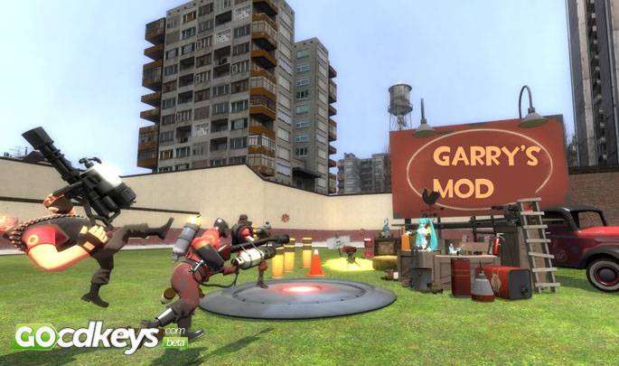

Muchas veces confundido con los mundos virtuales (como Second Life o Habbo), los sandbox son aquellos en los cuales se comienza prácticamente desde cero, creando prácticamente todo lo necesario para avanzar y transformar un mundo virtual propio. Son videojuegos no lineales, porque no tienen una línea de juego apenas definida, el orden de las acciones permite la mayor libertad según la presente clasificación. Eso no impide que puedan definirse unos objetivos para guiar al jugador, quien puede optar por ignorarlos. Una de las características esenciales de un juego sandbox es que al jugador se le dan muy pocas limitaciones, y este es capaz de alterar y/o modificar el entorno del juego Los ejemplos más conocidos y evidentes de este género son juegos de construcción: Minecraft, Terraria, SimCity, 7 Days To Die, Ark: Survival Evolved, Starbound y Garry's Mod. No obstante, se utiliza muchas veces sandbox como calificativo para referirse a juegos que presentan dichas cualidades de libertad de acción, no linearidad, etc. Así ocurre por ejemplo en ciertos juegos (como el Grand Theft Auto ).
Muchos creen que GTA fue el primer juego en esta modalidad, y otros tantos confunden la aparición del formato 3D con el inicio de los juegos de mundo abierto, pues aquí existe un gran error ya que un juego en 3D no necesariamente es un Sandbox, de hecho la gran mayoría de juegos en 3D en la actualidad son de tipo lineal, aunque ya se está propagando la modalidad Sandbox a múltiples juegos. Para remontarnos al primer juego Sandbox tenemos que ir al año 1981 cuando fue lanzado por la compañía Namco un juego Arcade llamado “Bosconian”, juego que ofrecía al jugador una libertad multidireccional, en donde la nave viajaba por el espacio en ocho direcciones y podía disparar hacia adelante y hacia atrás a conveniencia del jugador, anotando tantos puntos como sea posible al destruir misiles y bases enemigas, dotando de cierto grado de independencia al participante. Hoy en día estas máquinas son una autentica rareza de coleccionistas.
En un juego de tipo sandbox, un jugador puede ignorar o desactivar ciertos objetivos o tener acceso ilimitado a objetos. Esto puede abrir posibilidades que no fueron intencionales por el diseñador del juego. El modo sandbox es una opción entre los juegos orientados a objetivos, y deberían ser diferenciados del género homónimo que comprende los videojuegos de final abierto sin objetivos, como por ejemplo SimCity, Minecraft y Survivalcraft.
Plataforma del género